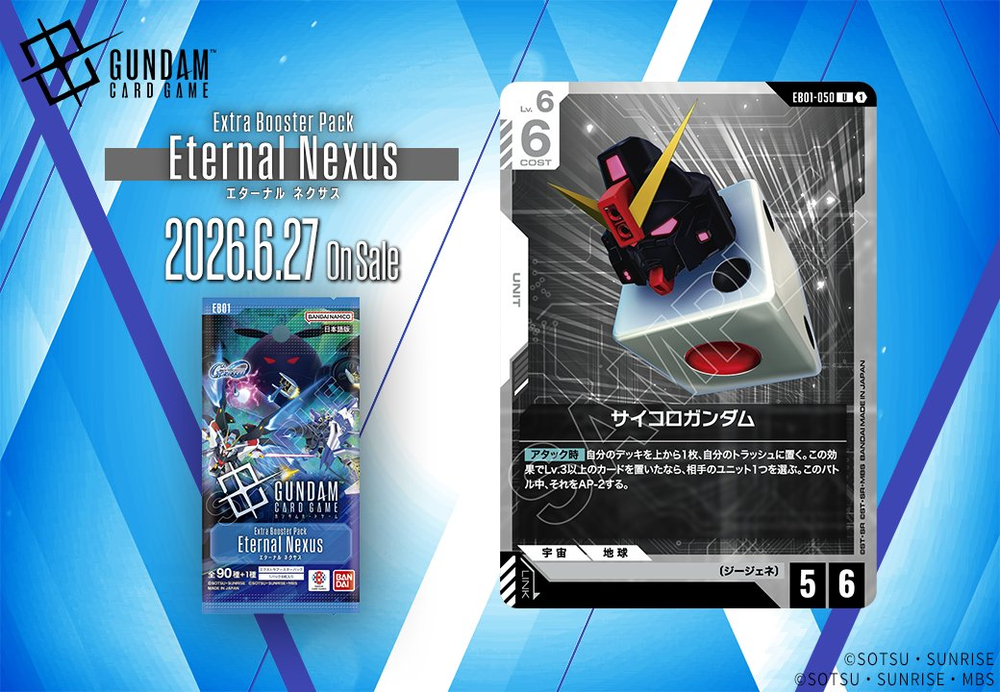
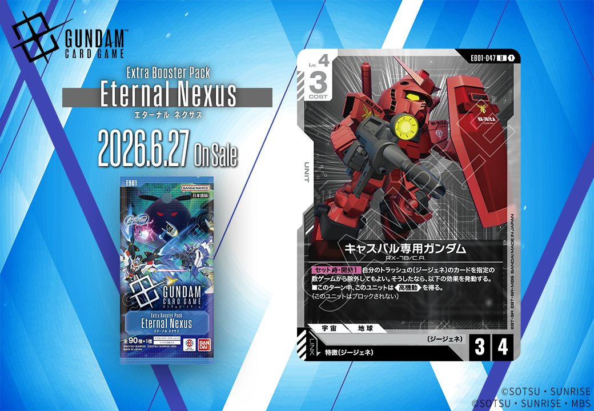

6月27日に発売予定のEternal Nexus(エターナル ネクサス)から、サイコロガンダムとキャスバル専用ガンダムの2枚の新規UNITカードが公開されました。今回は青と赤、それぞれ異なる色のUNITで、特にキャスバル専用ガンダムは特徴にジージェネを持つPILOTとのリンクが可能な点が注目されます。

サイコロガンダム (EB01-050)
| 色 | 青 | タイプ | UNIT |
| Lv | 6 | コスト | 6 |
| AP | 5 | HP | 6 |
| 特徴 | 〔ジージェネ〕 | ||
効果: 【アタック時】自分のデッキを上から1枚、自分のトラッシュに置く。この効果でLv.3以上のカードを置いたなら、相手のユニット1つを選ぶ。このバトル中、それをAP-2する。
サイコロガンダムはLv.6/COST6/AP5/HP6という標準的なスペックを持つジージェネユニット。アタック時にデッキトップをトラッシュに置き、Lv.3以上のカードを置けた場合は相手ユニット1体のAPを-2できる効果を持つ。デッキトップ次第で発動が不安定だが、成功時は相手の主力ユニットを弱体化させてバトルを有利に進められる。同色のジージェネカードである開発経路図の解放やルーナ・マナ&キャリー・ベースと組み合わせることで、ジージェネ軸のデッキ構築が可能だ。



キャスバル専用ガンダム (EB01-047)
| 色 | 赤 | タイプ | UNIT |
| Lv | 4 | コスト | 3 |
| AP | 3 | HP | 4 |
| 特徴 | 〔ジージェネ〕 | ||
| リンク条件 | 特徴にジージェネを持つPILOT | ||
効果: 【セット時】・【開発】 自分のトラッシュの〔ジージェネ〕のカードを指定の数ゲームから除外してもよい。そうしたなら、以下の効果を発動する。■このターン中、このユニットは《高機動》を得る。(このユニットはブロックされない)
Lv.4/COST3/AP3/HP4という標準的なスペックを持つ赤色のジージェネユニット。【セット時】・【開発】効果でトラッシュのジージェネカードをゲームから除外することで、そのターン中《高機動》を獲得できる。 ジージェネデッキで運用する場合、ハロ(EB01-017)など同特徴カードとの連携が期待でき、開発経路図の解放(ST10-014)の手札コストとしても活用可能。《高機動》により相手のブロッカーを無視してシールドエリアに直接アタックできるため、ゲーム終盤での決定打として機能する。


関連カード
-
 ハロ(EB01-017)NEW青系 — 同色・共通特徴: ジージェネ（新カード）
ハロ(EB01-017)NEW青系 — 同色・共通特徴: ジージェネ（新カード） -
 開発経路図の解放(ST10-014)NEW青系 — 同色・共通特徴: ジージェネ（新カード）
開発経路図の解放(ST10-014)NEW青系 — 同色・共通特徴: ジージェネ（新カード） -
 ルーナ・マナ&キャリー・ベース(ST10-016)NEW青系 — 同色・共通特徴: ジージェネ（新カード）
ルーナ・マナ&キャリー・ベース(ST10-016)NEW青系 — 同色・共通特徴: ジージェネ（新カード） -
 フルアーマー・ガンダム(サンダーボルト版)(EX)(EB01-009)NEW青系 — 同色・共通特徴: ジージェネ（新カード）
フルアーマー・ガンダム(サンダーボルト版)(EX)(EB01-009)NEW青系 — 同色・共通特徴: ジージェネ（新カード） -
 スーパーガンダム(ST10-004)NEW青系 — 同色・共通特徴: ジージェネ（新カード）
スーパーガンダム(ST10-004)NEW青系 — 同色・共通特徴: ジージェネ（新カード） -
 拡散ビーム砲(ST10-015)NEW赤系 — 同色・共通特徴: ジージェネ（新カード）
拡散ビーム砲(ST10-015)NEW赤系 — 同色・共通特徴: ジージェネ（新カード） -
 格闘戦(ST03-013)赤系デッキ内採用率26.2% (487デッキ)
格闘戦(ST03-013)赤系デッキ内採用率26.2% (487デッキ) -
 GQuuuuuuX（オメガ・サイコミュ起動時）(GD03-034)赤系デッキ内採用率24.2% (451デッキ)
GQuuuuuuX（オメガ・サイコミュ起動時）(GD03-034)赤系デッキ内採用率24.2% (451デッキ) -
 戦技の向上(GD03-109)赤系デッキ内採用率21.5% (400デッキ)
戦技の向上(GD03-109)赤系デッキ内採用率21.5% (400デッキ) -
 エースの戦い(GD01-111)赤系デッキ内採用率15.8% (294デッキ)
エースの戦い(GD01-111)赤系デッキ内採用率15.8% (294デッキ)